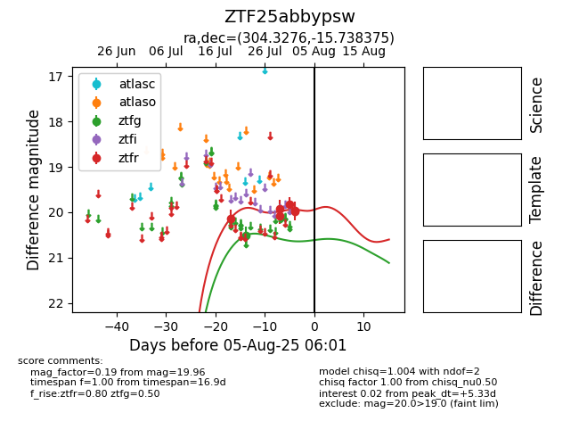

Target ZTF25abbypsw at 2025-08-05 06:01, see:
FINK: fink-portal.org/ZTF25abbypsw
Lasair: lasair-ztf.lsst.ac.uk/objects/ZTF25abbypsw
ALeRCE: alerce.online/object/ZTF25abbypsw
alt names
ZTF25abbypsw (ztf,fink)
coordinates:
equatorial (ra, dec) = (304.3276,-15.73838)
galactic (l, b) = (27.7788,-25.92496)
photometry
last ztfg=20.51, ztfr=19.96
1 ztfg, 6 ztfr detections
